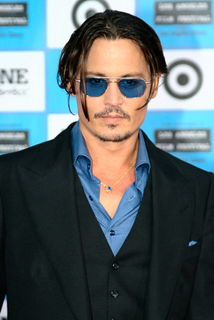

Johnny Depp

Who is Johnny Depp ?
Johnny Depp is a versatile American actor, producer, and musician known for his eccentric and enigmatic roles. Born on June 9, 1963, in Owensboro, Kentucky, he began his acting career in the 1980s with roles in films like "A Nightmare on Elm Street" (1984) and "Platoon" (1986). However, it was his portrayal of the quirky and endearing Edward Scissorhands in the 1990 film of the same name that catapulted him to stardom. Depp is celebrated for his chameleon-like ability to disappear into his characters, whether it's the flamboyant Captain Jack Sparrow in the "Pirates of the Caribbean" series (2003-2017), the enigmatic Willy Wonka in "Charlie and the Chocolate Factory" (2005), or the notorious gangster Whitey Bulger in "Black Mass" (2015). His collaboration with director Tim Burton on numerous occasions, including "Ed Wood" (1994) and "Sweeney Todd: The Demon Barber of Fleet Street" (2007), further solidified his reputation as one of Hollywood's most talented and unconventional actors. Despite personal controversies, Depp remains a beloved figure in the entertainment industry, admired for his dedication to his craft and his willingness to take on challenging and unconventional roles.
Gossip & Recent Scandals
Spilling the tea on Johnny Depp's recent scandals, darling! Brace yourselves for the juiciest gossip straight from the celebrity grapevine. First up, we've got the messy divorce drama with actress Amber Heard. Allegations of abuse flew like confetti at a Hollywood party, with both sides slinging mud in the courtrooms. Depp's reputation took a hit as Heard accused him of physical violence, while Depp vehemently denied the claims, calling her accusations a mere performance. And let's not forget the financial fiasco that ensued. Reports of Depp's extravagant spending habits surfaced, with allegations of him blowing through millions faster than you can say "Pirates of the Caribbean." Private island, vintage wine collection, and a fleet of luxury cars? Talk about living the high life, but the wallet's feeling the sting. But wait, there's more! Depp found himself in hot water after a libel case against a British tabloid backfired like a cheap firecracker. The court ruled against him, labeling him a "wife-beater" in headlines plastered across every gossip column. Ouch! Looks like Captain Jack Sparrow sailed into stormy legal seas, and this time, there's no parley in sight. So, grab your popcorn and buckle up, folks, because the Johnny Depp scandal train shows no signs of slowing down. It's a Hollywood rollercoaster ride you won't want to miss!
This page has been designed by: Preeti Lamba